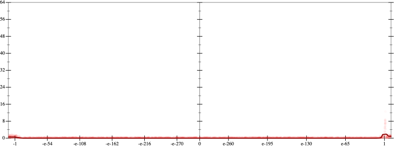
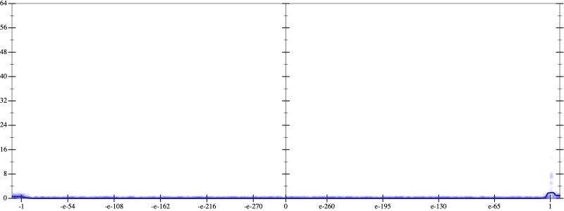
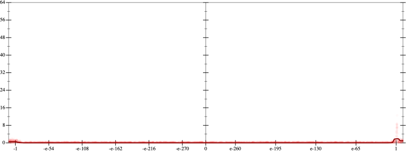
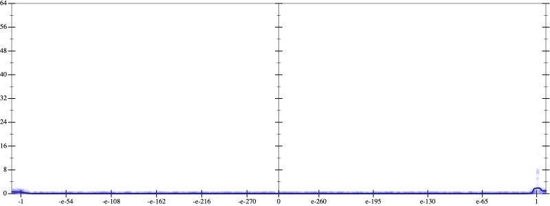
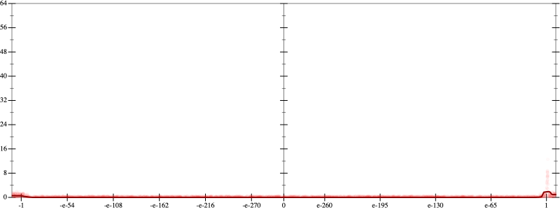
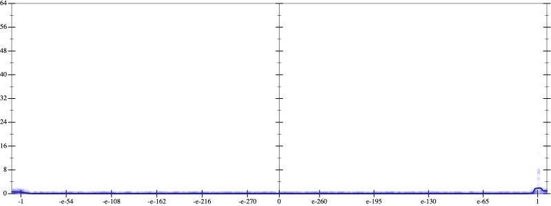

Error
 
Bits error versus x
Bits error versus x
Results
Initial program 0.1
Time bar (total: 20.0s)Debug log
herbie shell --seed 507954746
(FPCore (x)
:name "7"
:pre (and (>= x -100000000000.0) (<= x 100000000000.0))
(+ (+ (+ (+ (+ (+ (+ 1.0 (* -7.0 x)) (* 10.5 (* x x))) (* -5.833333 (* (* x x) x))) (* 1.458333 (* (* (* x x) x) x))) (* -0.175 (* (* (* (* x x) x) x) x))) (* 0.009722 (* (* (* (* (* x x) x) x) x) x))) (* -0.000198 (* (* (* (* (* (* x x) x) x) x) x) x))))